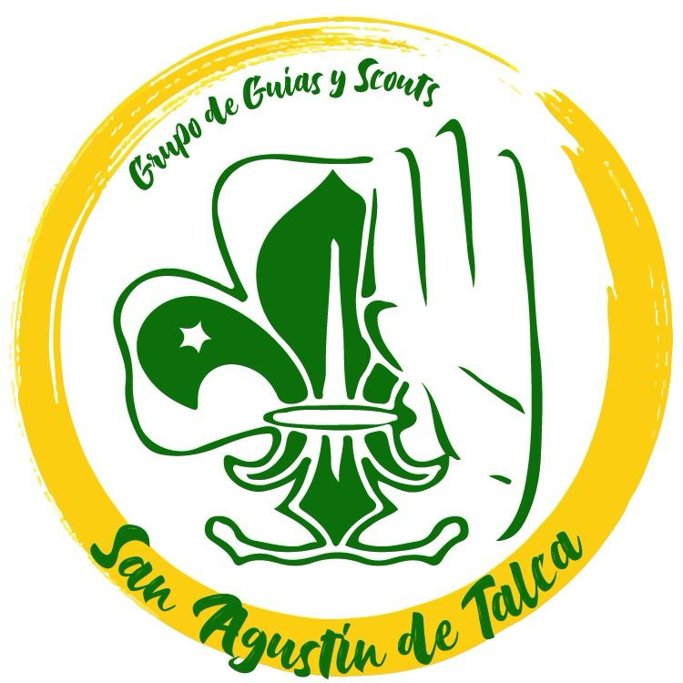
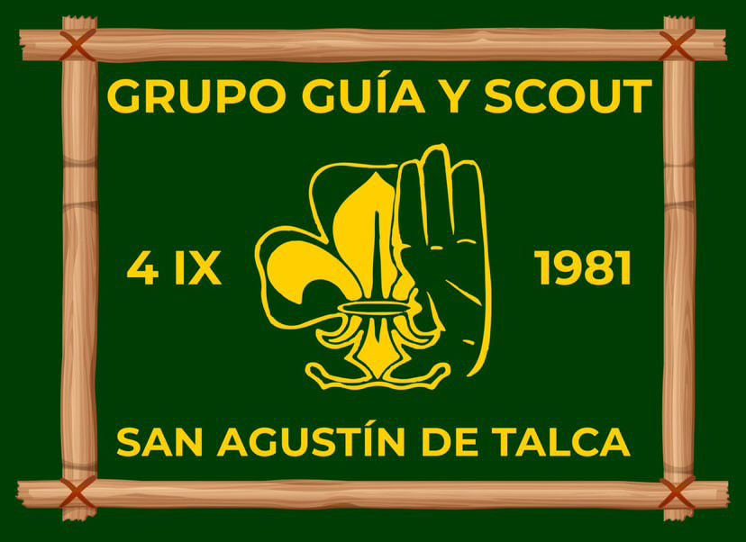
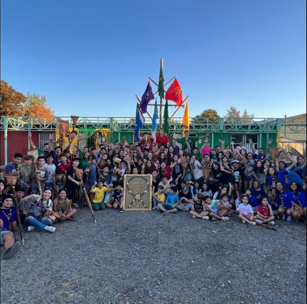
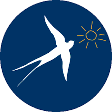
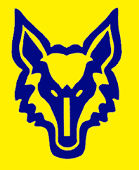
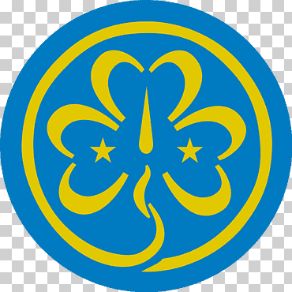
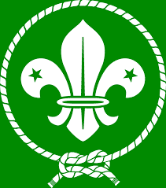
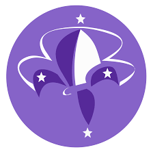
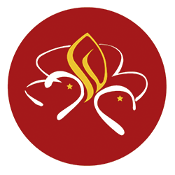

Grupo Guias y Scouts
San Agustin de Talca
Bienvenidos al Grupo Scout San Agustín de
Talca, una comunidad comprometida con
el crecimiento y formación integral de los
jóvenes.

El Grupo Scout San Agustín de Talca es una organización
juvenil
que busca formar a los jóvenes mediante el
aprendizaje de valores, trabajo
en equipo, y desarrollo de
habilidades al aire libre. Nuestro objetivo
es ofrecer un
espacio donde los niños y jóvenes puedan crecer como
personas responsables y comprometidas con su comunidad
y el medio ambiente.


Golondrinas
La Bandada de Golondrinas es la primera unidad
del Movimiento Scout para niñas de 7 a 11 años,
cuyo lema es "Siempre Mejor".

Lobatos
La Manada de Lobatos es la primera unidad del movimiento para los
niños de 7 a 11 años. Bajo el lema de ser «Siempre Mejor». En un marco
simbólico basado en el «Libro de las Tierras Vírgenes» de R. Kipling, los
niños, organizados en seisenas, crecen con la guía de los «Viejos Lobos».

Guias
Las Guías son la unidad de niñas y jóvenes de 11 a 15 años, . En
esta etapa, las Guías se organizan en patrullas, diseñando y
realizando sus propias actividades, lo que les permite desarrollar
habilidades de liderazgo y trabajo en equipo. Acompañadas por
sus guiadoras, viven la aventura al aire libre y exploran nuevas
destrezas físicas y mentales, siempre bajo el lema
«¡Siempre Listas!»

Scouts
Los Scouts es la unidad que agrupa a niños y jóvenes
entre 11 y 15 años. La curiosidad que caracterizó a los
Lobatos, en la etapa anterior, aquí da paso a la búsqueda
de nuevas aventuras para vivir tanto de manera
individual como con un grupo de amigos bajo el lema
«¡Siempre Listos!».

Pioneros
Una vez que las Guías y los Scouts egresan de sus
unidades, ingresan a la Avanzada de Pioneras y
Pioneros, donde, junto a sus compañeros de 15 a 17
años y en pequeños grupos llamados Comunidades,
con el lema «¡Siempre Adelante!»,

Caminantes
La última etapa del Movimiento es el Clan de Caminantes,
donde jóvenes de 17 a 21 años asumen el compromiso de
enfrentar el mundo y concretar su “proyecto de vida”,
basado en sus anhelos, expectativas y experiencias. Siempre
guiados por su lema: ¡Servir!